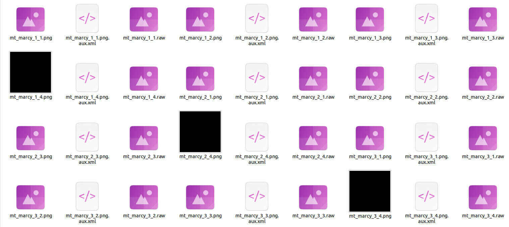
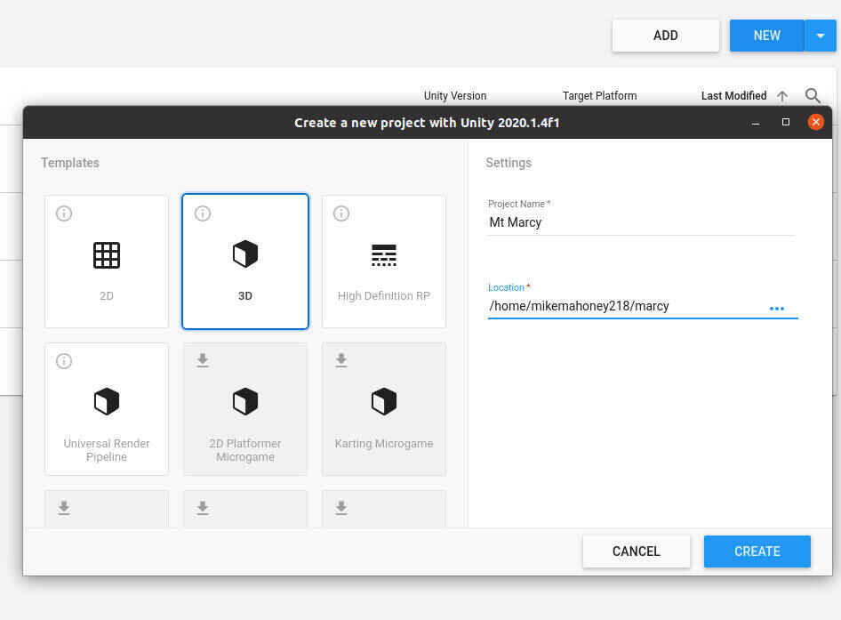
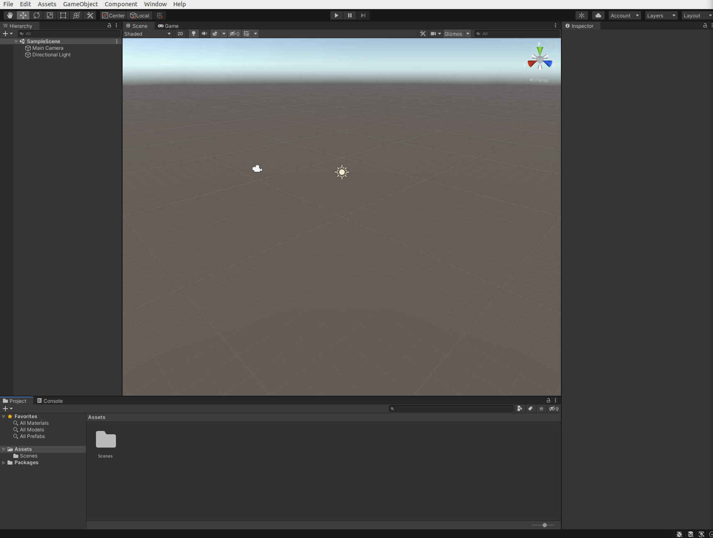
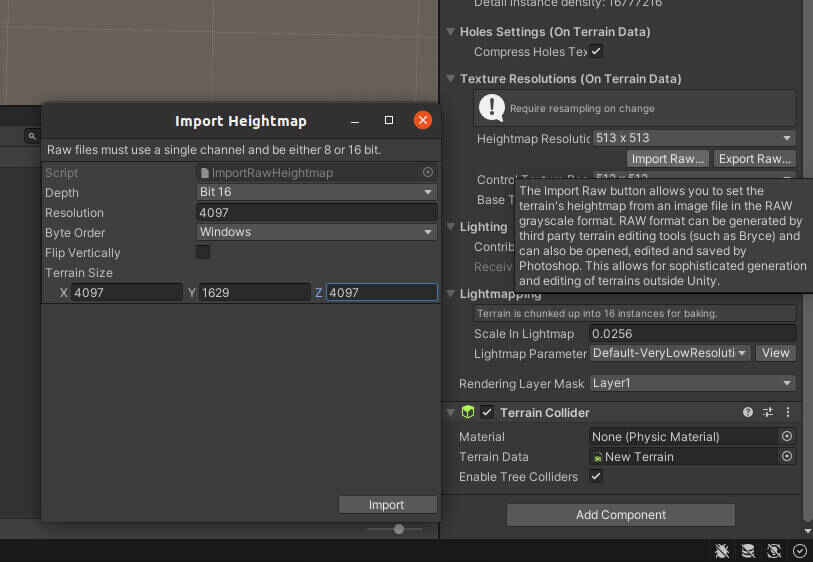
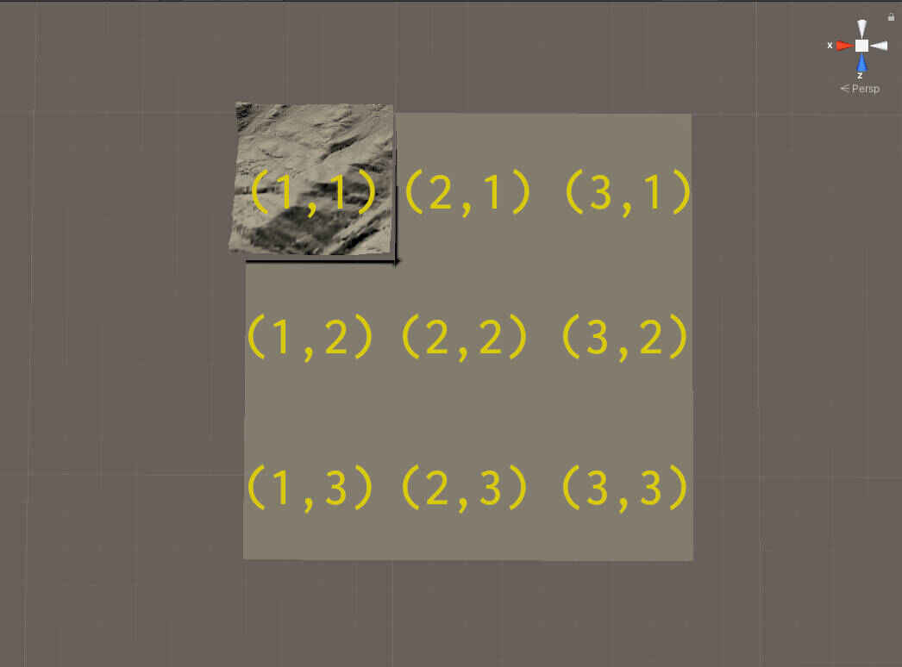
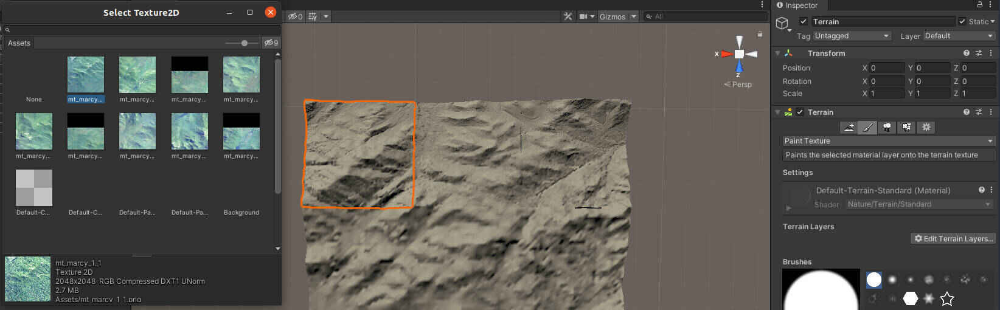
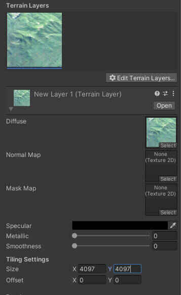
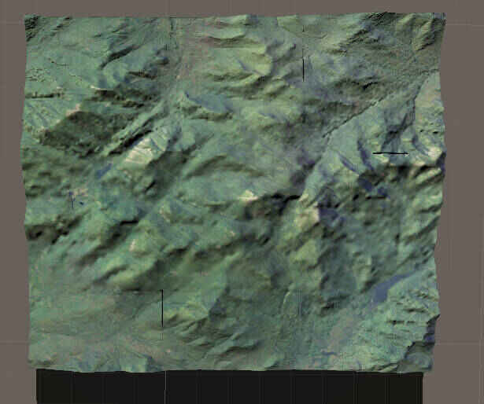
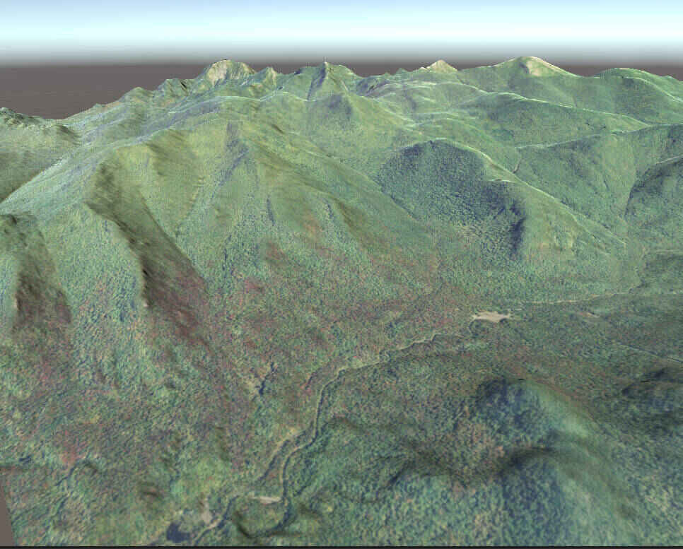

One of the key functions of terrainr is raster_to_raw_tiles, which takes TIFF files and converts them into formats that can be used to create interactive landscape visualizations in the Unity rendering engine. This tutorial assumes you have already downloaded Unity.
This is the entirety of the R code that we’ll be running today; most of this tutorial will be focusing on using Unity. If you aren’t familiar with the functions being used in this chunk, check out the introductory vignette!
Note that downloading this much data takes a bit of time!
library(terrainr)
library(sf)
library(magrittr)
# This will get us data for a 16 km2 area centered on Mt. Marcy,
# in the Adirondack State Park of New York
raw_tiles <- data.frame(id = seq(1, 100, 1),
lat = runif(100, 44.04905, 44.17609),
lng = runif(100, -74.01188, -73.83493)) %>%
st_as_sf(coords = c("lng", "lat")) %>%
st_set_crs(4326) %>%
get_tiles(services = c("elevation", "ortho"))
merged_outputs <- lapply(raw_tiles, merge_rasters)
mapply(function(x, y) raster_to_raw_tiles(input_file = x,
output_prefix = "mt_marcy",
# This is the maximum side length we can import to Unity
side_length = 4097,
raw = y),
merged_outputs,
c(TRUE, FALSE))The one thing I’ll point out in the code is that we’re providing two sets of arguments to each of our raster_to_raw_tiles runs: first we provide a heightmap with the argument raw = TRUE, then we rerun the function with our orthoimage and raw = FALSE. The reason here is that we’ll import these objects into Unity differently, so they need to be saved out in different file formats.
You might also have seen a number of “warning” messages, all in the general format Warning 1: -srcwin 0 8194 4097 4097 falls partially outside raster extent. Going on however.. That’s nothing to worry about! As our input files aren’t exactly divisible by 4097, some of the tiles we created extended beyond the edge of our input data. When the code finishes running, you should have about this many files:

Those small black PNG files (which are only a few kB in size, versus the roughly 75 MB average of the other files) are the few extra pixels at the end of the raster, which got split into their own files. Feel free to delete those (and their matching .raw counterparts). We can delete or ignore all the XML files as well; Unity doesn’t know how to process them.
After deleting those, we’re down to 16 files. Let’s go ahead and open a new Unity project now:

Which will spit us out into a brand new scene. Note that you can fly around in the scene by right-clicking and using WASD to navigate, and you can fly faster by holding shift at the same time.

Under “Game Object” in the top menu bar, go into the “3D Object” submenu and then click “Terrain” to add a new, blank terrain object to our scene. While the terrain is selected (indicated by an orange border; if it isn’t selected, just click on it) click the “Terrain Settings” menu (the gear icon on the far right) in the “Inspector” menu in the right-hand pane.
Almost all the way at the bottom of “Terrain Settings” is the “Import Raw” button. By clicking that and then selecting our first heightmap – let’s start with mt_marcy_1_1.raw – we can start importing it into Unity. Set resolution, X, and Z to the side_length argument in raster_to_raw_tiles, and Y to the maximum elevation across all your tiles – if you don’t know it, you can find it via raster::cellStats(raster::raster("your_merged_heightmap.tif"), "max"). In our case, it’s about 1629.

Hit “Import” and voila, you have a terrain tile!
To import the rest, we first need to create new terrain objects. I do this by going to the “Create Neighbor Terrains” menu (under Inspector, the icon of mountains with a plus sign all the way to the left) and adding terrain from there.
The trick here is that, when the red “X” cone points straight left and the blue “Z” cone points straight down, tiles are named following the format prefix_x_y.raw where x and y are the tile’s position in a grid. Our mt_marcy_1_1.raw tile is the top left of the grid, with the rest of the tiles being arranged as so:

You’ll have to re-input the resolution for each tile, but X, Y, and Z stay the same. Go ahead and import the rest of our tiles.
Once all your tiles are imported, right click in the “Assets” pane at the bottom of the page and select “Import New Asset”. Go ahead and import all of the 9 PNG files we produced earlier.
Now select that (1,1) terrain tile and go to the “Paint Terrain” menu in the Inspector, next to the Create Neighbor Terrain menu. Under “Edit Terrain Layers”, click “Create Layer”. The image tiles are named following the same pattern as the elevation tiles, so go ahead and select the (1,1) image. Double click the image to confirm.

Back in the Inspector, click the image that appeared under “Terrain Layers” and then update the Size values to the same side length as the elevation tiles. This will stretch the texture out so it drapes properly over the landscape.

You’ll want to repeat this for each tile – but make sure you click off the tile you just painted before clicking the next one! Otherwise, you’ll paint that tile with the same orthoimage as you just applied; to undo this, click the offending image under Terrain Layers, then “Edit Terrain Layers,” then “Remove Layer”.
And just like that, your map is painted! You’re now able to fly through your creation or use the rest of Unity’s features to turn your landscape into a full 3D experience.

